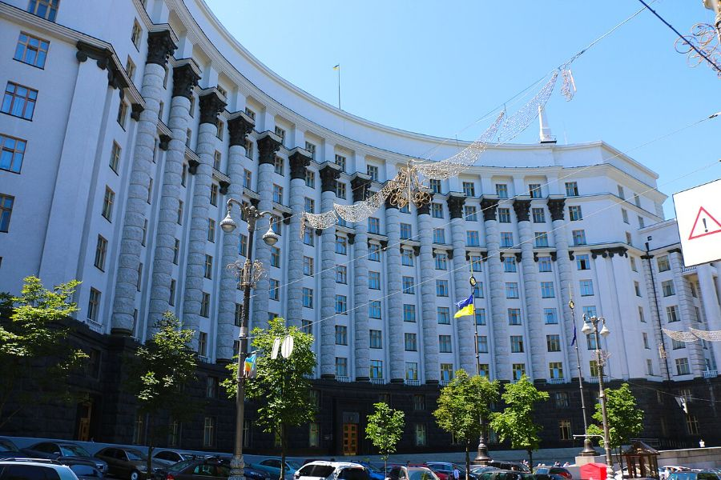
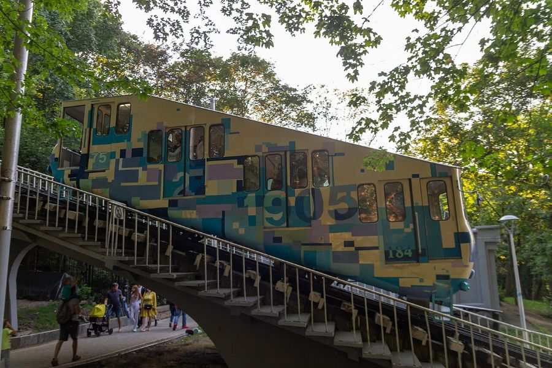

 Уряд Кабмін зберіг пільгові тарифи на світло для населення Що це означає для тебеРахунки за електроенергію вдома поки не зростуть. 8 жовтня · Фото: Prymasal, CC BY-SA 4.0
Офіс президента Зеленський анонсував дводенні переговори України та США Що відомоСклад делегацій уже називають ЗМІ – стежимо за офіційним підтвердженням. 9 жовтня · Фото: Офіс Президента, CC0
 Місто Аварійні відключення: у Києві зупинили фунікулер Що це означає для тебеПеревір графік свого району й заряди павербанк заздалегідь. 9 жовтня · Фото: Maksym Kozlenko, CC BY-SA 4.0